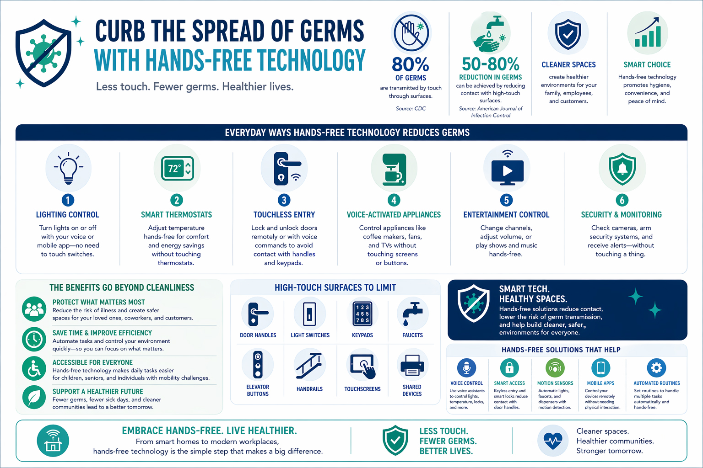
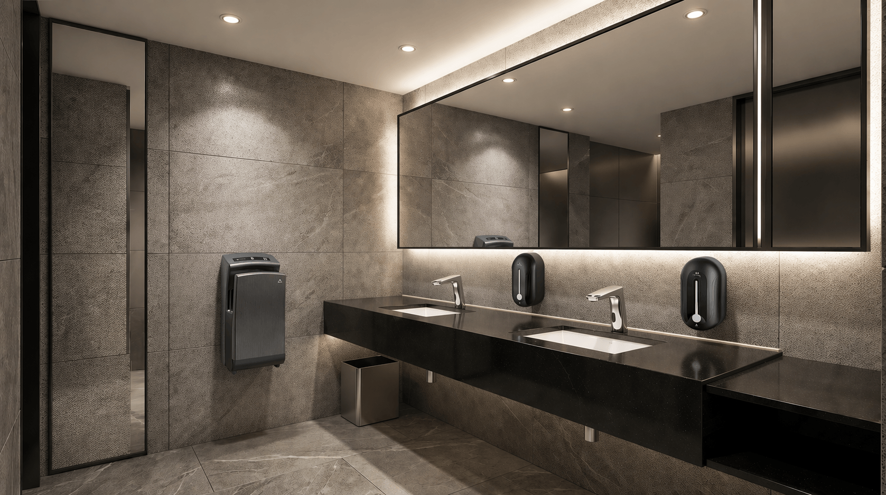

SHARE
It’s more important than ever in the midst of flu and cold season. To keep germs at bay, we should limit the number of surfaces we touch, and the amount of people we interact with.
Since the coronavirus pandemic, the way we interact with our homes and workplaces is evolving. High-touch surfaces—light switches, door handles, thermostats, and shared devices—can quickly become hotspots for germs. One of the simplest and most effective ways to reduce contact and improve cleanliness is by adopting hands-free control through smart technology.
Why Touchless Matters
Every time multiple people touch the same surface, the risk of spreading bacteria and viruses increases. In busy households, offices, classrooms, and retail environments, these contact points add up fast. While regular cleaning helps, reducing the need to touch surfaces altogether adds an extra layer of protection.
Hands-free control minimizes physical contact, helping create a cleaner, safer environment without adding extra effort to your daily routine.
How Hands-Free Technology Works
Voice-activated assistants and smart devices allow you to control key functions using simple commands. With systems like Amazon Alexa or Google Assistant, you can manage your environment without lifting a finger.
From turning on lights to adjusting temperature or even locking doors, these systems connect to compatible devices throughout your space—making everyday interactions seamless and touch-free.
Everyday Ways to Reduce Germ Spread
1. Lighting Control
Instead of touching switches, simply say a command to turn lights on or off. This is especially useful in shared spaces like kitchens, bathrooms, and conference rooms.
2. Smart Thermostats
Adjust the temperature without touching a wall unit. Voice control or mobile apps make it easy to stay comfortable while reducing contact.
3. Touchless Entry
Smart locks allow you to lock and unlock doors remotely or via voice command, limiting contact with handles and keypads.
4. Voice-Activated Appliances
From coffee makers to TVs, many modern appliances can be controlled hands-free, cutting down on shared surface use.
5. Automated Routines
Set routines that trigger multiple actions at once—like turning off lights, locking doors, and lowering the thermostat when you leave—without touching anything.

Benefits Beyond Hygiene
While reducing germs is a major advantage, hands-free control also brings added convenience and efficiency. It can:
- • Save time during busy routines
- • Improve accessibility for individuals with mobility challenges
- • Create a more modern, connected environment
- • Enhance overall comfort and ease of use
Ideal for Homes and Businesses
Hands-free solutions aren’t just for tech enthusiasts—they’re practical for nearly any setting:
- • Homes: Keep your family safer while simplifying daily tasks
- • Offices: Reduce shared touchpoints among employees
- • Retail spaces: Provide a cleaner experience for customers
- • Healthcare environments: Support stricter hygiene standards

Hands-Free Office Bathroom for a Client in Peachtree City, GA
Adopting hands-free control doesn’t require a full overhaul. Start small with a smart speaker or a few connected devices, then expand over time. Many systems are scalable, allowing you to build a setup that fits your specific needs and budget.
Or...if you're ready to go all out, Team Oracle is all hands on deck to install hands-free components into your space. We'll create a cleaner environment while adding convenience to your everyday life.